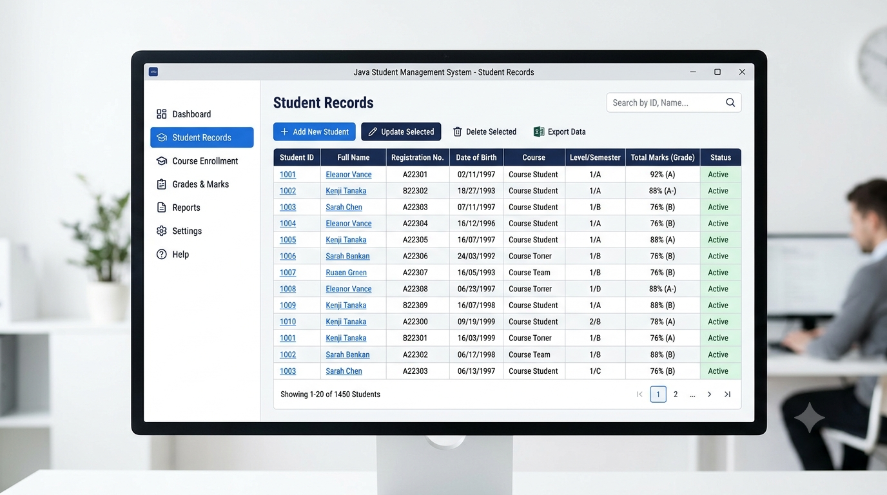
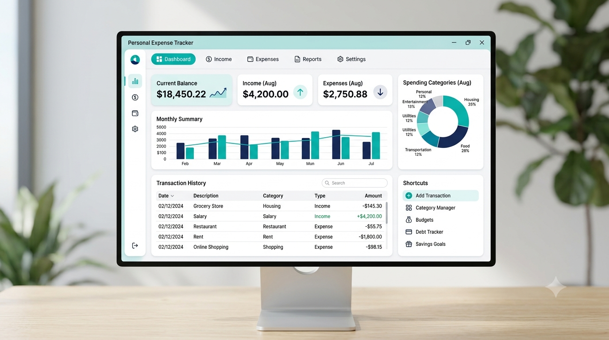
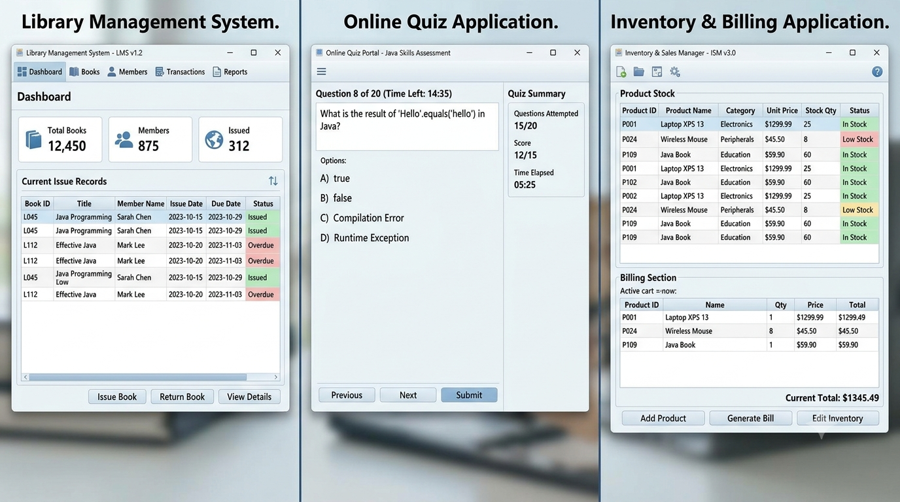
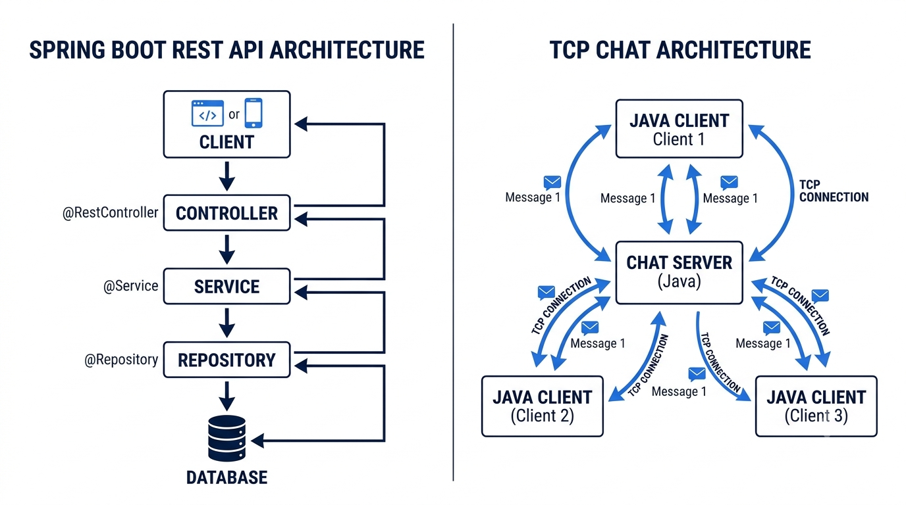

1. Quick Answer: 10 Java Projects for Students
Here is the complete list in a practical learning order. The first projects can be built as console applications; later projects introduce persistence, databases, web APIs, and networking.
| Project | Level | Main concepts | Suggested starting stack |
|---|---|---|---|
| Student Management System | Beginner | OOP, collections, CRUD, validation | Core Java; optionally file storage |
| Personal Expense Tracker | Beginner | Classes, dates, collections, calculations | Core Java + CSV or text files |
| Bank Account Management System | Beginner–Intermediate | Encapsulation, state, exceptions, transactions | Core Java |
| Library Management System | Beginner–Intermediate | OOP, collections, JDBC, SQL | Core Java + JDBC + MySQL |
| Online Quiz Application | Beginner–Intermediate | Collections, control flow, scoring, file handling | Core Java; optional Swing/JavaFX |
| Task and Productivity Manager | Intermediate | OOP, collections, date/time, persistence | Core Java + file storage or JDBC |
| Job and Internship Application Tracker | Intermediate | Data modelling, filtering, JDBC, SQL | Java + JDBC + MySQL |
| Inventory and Billing Management System | Intermediate | JDBC, transactions, validation, reports | Java + JDBC + MySQL |
| Employee Management REST API | Intermediate–Advanced | Spring Boot, REST, validation, persistence | Java + Spring Boot + Spring Data JPA |
| Real-Time Chat Application | Advanced | Networking, sockets, concurrency, protocols | Core Java + TCP sockets + threads |
A useful rule: finish a small working version before adding a GUI, database, authentication, or deployment. The stack should solve a real need in the project—not simply make the technology list longer.
2. Before You Start: Choose the Right Level
Java projects become easier to plan when you know which layer you are practising. Core Java means the language and standard library: classes, objects, collections, exceptions, file I/O, and other built-in APIs. It does not automatically include a database, web server, or Spring Boot.
- Core Java: start with console input/output and collections. Add file storage when you need data to survive after the program closes.
- JDBC: use Java Database Connectivity when your Java program needs to execute SQL against a relational database such as MySQL or PostgreSQL.
- GUI: Swing or JavaFX can provide desktop screens. They are optional; a console version is a valid first milestone.
- Spring Boot: use it when you are ready to build a web application or REST API. It is not required for beginner console projects.
- Networking: Java sockets let separate programs communicate over a network. This is a different skill from database access or REST development.
Use a supported JDK, an IDE or editor you understand, and a version-control repository. For official setup guidance, see the Java learning resources and the Java SE documentation.
3. Student Management System
Difficulty: Beginner

What it is: A small application for maintaining student records such as name, registration number, course, and marks. It is a strong first Java project because the requirements map naturally to classes and basic CRUD operations—create, read, update, and delete.
Key features
- Add a student with a unique registration number.
- Display all records and search by registration number or name.
- Update student details and marks; delete or archive a record.
- Validate required fields and reject duplicate registration numbers.
- Optionally calculate totals, percentages, or grade categories using clearly stated rules.
Java concepts you'll learn
Classes and objects, constructors, encapsulation, methods, ArrayList or HashMap, loops, conditional statements, input validation, and exception handling.
Suggested technology stack and storage
Start with Core Java and a console menu. Store records in an
ArrayList while the program runs. Add CSV or text-file
storage later if you want persistence. A database is not necessary
for the first version.
How it works
The user selects an operation from a menu. The application validates the input, checks whether the registration number already exists, and calls the relevant method on a student collection. If file storage is added, load records at startup and save changes safely when data is modified or the program exits.
Possible improvements
- Separate student, course, and mark-related classes.
- Add sorting by name or marks and filtering by course.
- Replace the in-memory collection with JDBC and a relational database as a later milestone.
GitHub/portfolio tip: Include sample records, a screenshot of the menu or interface, the validation rules, and a short demonstration of adding, searching, updating, and deleting a student. Explain how duplicate registration numbers are prevented.
4. Personal Expense Tracker
Difficulty: Beginner

What it is: A personal finance practice application that records income and expenses, groups transactions into categories, and calculates a running balance. It is an educational tracker, not a banking or financial-advice product.
Key features
- Add income or expense entries with amount, date, category, and note.
- List, edit, and delete transactions.
- Calculate total income, total expenses, and current balance.
- Filter transactions by date range or category.
- Show a monthly or category-wise spending summary.
Java concepts you'll learn
Object modelling, enums for transaction types, collections,
date/time handling with LocalDate, numeric calculations
using BigDecimal, sorting, and exception handling.
Suggested technology stack and storage
Use Core Java for the first console version. A CSV file is sufficient for a simple export/import exercise. If you later add multiple users or more complex queries, use JDBC with a relational database.
How it works
Each transaction is represented as an object. The application
validates that the amount is positive, stores the transaction, and
calculates summaries from the stored entries. For money values, use
BigDecimal rather than relying on binary floating-point
types for exact decimal arithmetic.
Possible improvements
- Add a monthly budget and warn when spending crosses the chosen limit.
- Export a date-filtered report to CSV.
- Add charts in a later GUI version, while keeping calculations in a separate service class.
GitHub/portfolio tip: Show a sample monthly summary and explain how you handle decimal amounts, invalid input, and date filters. Use fictional sample transactions rather than publishing personal financial data.
5. Bank Account Management System
Difficulty: Beginner–Intermediate
What it is: A simulation of basic account operations. Users can create a demo account, deposit funds, withdraw funds, check a balance, and review transaction history. This is a programming exercise only—not real banking software.
Key features
- Create a demo account with a unique account identifier and opening balance.
- Deposit and withdraw a positive amount.
- Prevent withdrawals that exceed the available balance.
- Display the current balance and a chronological transaction history.
- Record transaction type, amount, timestamp, and resulting balance.
Java concepts you'll learn
Encapsulation, access modifiers, constructors, object state, method
design, collections, BigDecimal, custom exceptions, and
unit testing.
Suggested technology stack and storage
Build the first version using Core Java and in-memory collections. Add file storage only after the operations work correctly. JDBC can be a later extension for persistent demo accounts.
How it works
An Account object owns its balance and exposes
controlled methods such as deposit and
withdraw. These methods validate the amount before
changing the state. The application records a transaction only after
an operation succeeds. Do not expose a public setter that allows the
balance to be changed arbitrarily.
Possible improvements
- Add account types with clearly documented demo rules.
- Persist transactions and accounts using JDBC.
- Write tests for zero or negative amounts, insufficient funds, and repeated operations.
GitHub/portfolio tip: Document the simulation boundary clearly. Include a transaction-flow example and tests proving that invalid withdrawals do not change the account balance. Do not describe it as secure or production-ready banking software.
6. Library Management System
Difficulty: Beginner–Intermediate

What it is: An application for maintaining a catalogue of books and members, and recording book issue and return operations. It is a natural next step after learning classes and collections because it introduces relationships between different types of records.
Key features
- Add, edit, search, and remove book records.
- Register members and search for them by member ID.
- Issue an available book to a member and record the issue date.
- Accept returns, update availability, and optionally calculate overdue days.
- Show currently issued books and a member's borrowing history.
Java concepts you'll learn
OOP, composition, collections, date/time API, validation, exception handling, and—when a database is introduced—JDBC, SQL, primary keys, foreign keys, and transactions.
Suggested technology stack and storage
For the simplest version, use Core Java collections. For a
database-backed version, use JDBC with MySQL or PostgreSQL. A basic
schema can contain books, members, and
loans tables. A loan row should reference both the book
and member rather than storing duplicated names.
How it works
When a member borrows a book, the application checks that the member exists and the book is available. It then creates a loan record and updates the book's availability within one database transaction. On return, it closes the loan and updates availability. A transaction helps prevent the records from being left in an inconsistent state if one database operation fails.
Possible improvements
- Support multiple copies of the same title using separate copy IDs.
- Add due dates, renewals, and overdue reports.
- Create a Swing or JavaFX interface after the underlying logic is stable.
GitHub/portfolio tip: Include a simple entity-relationship diagram, SQL schema or setup script, and a demonstration of issuing and returning a book. Explain how your application prevents issuing an unavailable copy twice.
7. Online Quiz Application
Difficulty: Beginner–Intermediate
What it is: A quiz program that presents questions, accepts answers, calculates a score, and displays the result. Start with a local console quiz; a desktop or web interface can be added later.
Key features
- Load multiple-choice questions with options and a correct answer.
- Display one question at a time and accept an answer.
- Calculate the score and show correct answers after submission.
- Support categories or difficulty levels.
- Optionally add a countdown timer and save past attempts.
Java concepts you'll learn
Classes, lists, loops, conditionals, enums, randomization, input validation, file reading, and basic test design. A timer introduces date/time or scheduled-task concepts depending on the implementation.
Suggested technology stack and storage
Use Core Java for a console version and keep questions in a text, CSV, or JSON resource file. Swing or JavaFX is optional for a desktop interface. A database is useful only when you need persistent users, question management, or attempt history.
How it works
The program loads a set of question objects, presents their options, validates the selected option, and compares it with the answer key. At the end, it calculates the score from the submitted answers. Keep the answer key separate from the question display logic so the program is easier to test.
Possible improvements
- Shuffle questions and options while preserving the correct answer mapping.
- Add negative marking or per-question time limits with clearly explained rules.
- Store quiz attempts and show topic-wise performance.
GitHub/portfolio tip: Include a short sample quiz, screenshots of the question and result screens, and tests for scoring, skipped questions, invalid options, and empty question sets.
8. Task and Productivity Manager
Difficulty: Intermediate
What it is: A task organiser that lets a user create tasks, set deadlines and priorities, update progress, and find tasks using filters. It can begin as a command-line tool and grow into a desktop or database-backed application.
Key features
- Create tasks with a title, description, due date, and priority.
- Update status such as Not Started, In Progress, or Completed.
- Filter by status, priority, or due date; sort by deadline.
- Identify overdue tasks without silently changing their status.
- Save and reload tasks between sessions.
Java concepts you'll learn
OOP, enums, collections, comparators, Java's date/time API, file I/O or JDBC, and separation of application logic from input/output.
Suggested technology stack and storage
Use Core Java and an ArrayList or
Map first. Persist to a file for a small single-user
version, or use JDBC and a relational database when you want robust
filtering and multiple users. A GUI is optional.
How it works
Each task is stored as an object with a stable ID. Menu actions call methods to create, update, complete, and filter tasks. A dedicated comparison method can sort tasks by due date or priority. Keep date parsing and validation in one place rather than repeating it across menu handlers.
Possible improvements
- Add recurring tasks and reminders.
- Support tags, projects, and a weekly summary.
- Add a database-backed multi-user version after the single-user workflow is reliable.
GitHub/portfolio tip: Demonstrate the same task list before and after filtering or sorting. Explain how you handle overdue dates, missing deadlines, and invalid status changes.
9. Job and Internship Application Tracker
Difficulty: Intermediate
What it is: A personal tracker for recording companies, job roles, application dates, current status, and follow-up dates. It helps students organise their own application process; it does not automatically apply to jobs or access private recruitment systems.
Key features
- Add a company, role, location, job link, and application date.
- Track statuses such as Saved, Applied, Assessment, Interview, Offer, and Rejected.
- Set a follow-up date and record notes about each interaction.
- Search by company or role and filter by status or date.
- Show a summary of applications by status.
Java concepts you'll learn
Classes, enums, collections, date/time handling, sorting, validation, JDBC, SQL queries, and relational data modelling.
Suggested technology stack and storage
Start with Core Java and file storage if you only need a local
tracker. For a more substantial version, use JDBC with MySQL or
PostgreSQL. A single applications table may be enough
initially; add separate company and activity tables only when the
relationships justify them.
How it works
The user creates an application record and updates its status as the process changes. The program can query records due for follow-up and generate counts by status. Validate dates and URLs, and treat a job link as user-provided text rather than assuming it is always active.
Possible improvements
- Add interview rounds and a timeline of status changes.
- Export a CSV backup and import it with duplicate checks.
- Add reminders in a later GUI or web version.
GitHub/portfolio tip: Use fictional company and candidate data in screenshots. Include a sample dashboard and explain how status history and follow-up filtering work. Do not publish private recruiter messages or personal application details.
10. Inventory and Billing Management System
Difficulty: Intermediate
What it is: A small shop-oriented application for managing products, stock quantities, prices, and sales bills. It combines database operations with business rules such as stock validation and consistent bill totals.
Key features
- Add, edit, search, and deactivate product records.
- Track product code, name, unit price, and available quantity.
- Create a bill with multiple line items and calculate subtotals and totals.
- Reduce stock after a sale and prevent selling more units than are available.
- View basic sales records and low-stock products.
Java concepts you'll learn
OOP, collections, BigDecimal, validation, exception
handling, JDBC, SQL joins, prepared statements, and database
transactions.
Suggested technology stack and storage
Use Java with JDBC and MySQL or PostgreSQL for the database-backed
version. A practical schema can include products,
sales, and sale_items. A desktop interface
with Swing or JavaFX is optional and should be added after the
business logic works.
How it works
The user selects products and quantities for a sale. The application checks stock and calculates each line amount and the bill total. It then inserts the sale and its items and reduces stock in one database transaction. If any step fails, roll back the transaction so the bill and stock counts do not disagree. Use prepared statements for SQL values.
Possible improvements
- Add invoice numbers, printable receipts, and date-wise sales reports.
- Support product categories, suppliers, and stock adjustments.
- Add role-based access for a demo cashier and administrator account.
GitHub/portfolio tip: Show the database schema and a sample invoice using fictional data. Include tests for decimal calculations, insufficient stock, and rollback behavior when a sale cannot be completed.

11. Employee Management REST API
Difficulty: Intermediate–Advanced
What it is: A backend service that exposes HTTP endpoints for creating, reading, updating, and deleting employee records. Unlike the earlier console projects, this project introduces a web API that can be used by a separate frontend or API client.
Key features
- Create an employee with validated fields such as name, email, department, and job title.
- Retrieve one employee or list employees with pagination.
- Update employee details and delete or deactivate records.
- Return suitable HTTP status codes and clear error responses.
- Persist data in a relational database and document endpoints.
Java concepts you'll learn
Java OOP, annotations, dependency injection, REST principles, HTTP methods and status codes, request validation, exception handling, layered application design, and persistence through Spring Data JPA.
Suggested technology stack and storage
Use a current supported JDK, Spring Boot, Spring Web, Spring Data JPA, Bean Validation, and MySQL or PostgreSQL. Maven or Gradle manages dependencies and builds. Use an API client such as Postman or an equivalent tool to test requests. This project genuinely requires a web framework and database for the described version; Spring Boot is not needed for the first eight projects.
How it works
A client sends an HTTP request to a controller endpoint. The controller validates the request and delegates business work to a service. A repository uses JPA to read or write the database, and the application returns a response DTO. Keep controller, service, and repository responsibilities separate. Avoid exposing database entities directly as the public API contract when a dedicated response model is more appropriate.
Possible improvements
- Add pagination, sorting, and search by department.
- Write unit and integration tests, including validation and not-found cases.
- Add authentication and role-based authorization only after the basic API is correct.
- Provide OpenAPI documentation and containerized local setup as later extensions.
GitHub/portfolio tip: Include endpoint
documentation with example requests and responses, database
configuration instructions, test commands, and a Postman collection
or OpenAPI page. Keep credentials outside source control and provide
an .env.example with placeholders only.
12. Real-Time Chat Application
Difficulty: Advanced
What it is: A client-server application in which multiple users can exchange messages over a network. A manageable first version uses Java TCP sockets and a simple text protocol. It can later grow into a more complete chat system.
Key features
- Start a server that accepts incoming client connections.
- Allow a client to connect with a chosen display name.
- Send messages from one client to connected clients.
- Handle joining, leaving, and unexpected disconnections.
- Optionally add private messages, message timestamps, and persistent history.
Java concepts you'll learn
Networking, TCP sockets, input/output streams, threads or executors, synchronization, concurrent collections, exception handling, and protocol design.
Suggested technology stack and storage
Use Core Java's ServerSocket and
Socket APIs for a learning-focused TCP version. Use a
thread or executor to handle connected clients without blocking the
entire server. No database is needed for an in-memory chat. Add JDBC
only if message history must persist. A Swing or JavaFX client is
optional.
How it works
The server listens on a port and accepts a socket for each client. Each connection has streams for reading and writing messages. The server coordinates message delivery to the intended recipients. Define a simple message format and handle disconnects carefully. Do not assume that one read operation always corresponds to one complete application message; TCP is a byte stream, so your protocol needs message framing, such as newline-delimited messages or length prefixes.
Possible improvements
- Add private rooms and user presence.
- Store chat history and load recent messages when a user joins.
- Add authentication, TLS, rate limiting, and input limits before exposing a service beyond a trusted local network.
- Build a graphical client and test simultaneous connections.
GitHub/portfolio tip: Include a client-server architecture diagram, instructions for running the server and two clients, and a short demo showing multiple users exchanging messages. Document the protocol and known limitations. Do not describe a basic socket demo as a secure production messaging platform.
13. Which Java Project Should You Choose?
| Your current level or goal | Recommended project | Why it fits | First milestone |
|---|---|---|---|
| New to Java | Student Management System | Practises classes, collections, and CRUD without external dependencies | Add and search records in memory |
| Practising Core Java | Expense Tracker or Quiz Application | Introduces dates, calculations, validation, and file handling | Complete the console workflow and test edge cases |
| Learning OOP deeply | Bank Account or Library System | Requires clear object responsibilities and state rules | Model the main entities and enforce their rules |
| Learning SQL and JDBC | Library or Job Application Tracker | Provides useful relationships and queries | Connect Java to a database and complete one CRUD flow |
| Building a database project | Inventory and Billing System | Combines multiple tables, calculations, and transactions | Complete one sale with consistent stock updates |
| Targeting backend development | Employee Management REST API | Practises HTTP, Spring Boot, persistence, and API design | Build and test create/read endpoints |
| Interested in networking | Real-Time Chat Application | Introduces sockets, concurrency, and message framing | Connect one client to a server, then add a second client |
Choose a project whose first milestone is achievable with the Java concepts you already understand. If you are not comfortable with classes and collections yet, do not jump straight into Spring Boot or multithreading. A completed, well-explained beginner project is a better foundation for the next one.
14. Recommended Java Learning Path
You do not need to master every Java feature before building something. Learn a concept, use it in a small feature, and then extend the project.
- Java fundamentals: variables, data types, operators, conditions, loops, methods, arrays, and basic input/output. Practise with a small console menu.
- Object-oriented programming: classes, objects, constructors, encapsulation, inheritance, polymorphism, and composition. Build the Student Management or Bank Account project.
- Collections and exceptions: use List, Set, Map, iterators, comparators, and meaningful exception handling. Extend the Expense Tracker or Quiz Application.
- File handling and testing: learn streams and file paths, then add persistence. Write tests for calculations and business rules.
- SQL and JDBC: learn tables, keys, joins, prepared statements, connection management, and transactions. Upgrade the Library or Inventory project.
- HTTP and REST fundamentals: understand requests, responses, methods, status codes, JSON, and API validation.
- Spring Boot and JPA: build a layered REST API, connect a database, document endpoints, and add automated tests.
- Networking and concurrency: practise sockets, threads or executors, shared state, and message framing through the chat application.
For broader computer science topics and how projects fit into a wider learning plan, see the Complete Computer Science Roadmap. If you are still building a consistent study routine, the Perfect AI Study System explains a practical way to organise learning and revision.
15. How to Make Your Java Project Stand Out on GitHub
A project is easier to evaluate when another person can understand what it does, run it, and see that its important behaviour has been tested.
1. Write a useful README
Explain the problem, main features, Java version, dependencies, and project structure. Add exact setup and run commands. State whether the project is a console app, desktop app, or REST API.
2. Show the working result
Add screenshots for a GUI or sample terminal output for a console program. For an API, show example requests and responses. A short demonstration should show a real workflow, not just the opening screen.
3. Make setup reproducible
Include the Maven pom.xml or Gradle build file when
applicable, database schema or migration instructions, and sample
configuration. Use placeholder values in
.env.example if needed; never commit real passwords,
tokens, or database credentials.
4. Organise the code clearly
Use meaningful package, class, and method names. Separate
user-interface code from business logic and database access as the
project grows. Avoid putting the entire application into one large
Main class.
5. Test important behaviour
Test calculations, validation, duplicate records, insufficient stock, invalid operations, database failures, and network disconnections where relevant. Include instructions for running the tests.
6. Use meaningful commits
Commit focused changes with messages that explain what changed, such
as Add duplicate registration validation or
Test stock rollback on failed sale. Commit history
should reflect real work rather than manufactured activity.
7. Explain limitations honestly
List features that are incomplete and decisions you would revisit. Do not claim a console simulation is a production system or an API is secure simply because it runs locally.
For additional project-presentation ideas, read 10 GitHub Projects for Computer Science Students.
16. Common Mistakes Students Should Avoid
- Copying without understanding: reading examples is useful, but build your own version and make sure you can explain the important classes, methods, and design choices.
- Starting with too many technologies: do not add Spring Boot, a database, a GUI, and authentication to a first console project before the basic workflow works.
-
Using unclear names: prefer names such as
StudentRepositoryorcalculateMonthlyTotalover vague names such asData1ordoWork. - Skipping input validation: handle blank names, duplicate IDs, invalid numbers, and impossible dates deliberately.
- Ignoring exceptions: do not hide errors with empty catch blocks. Handle expected failures and provide useful messages.
- Mixing every responsibility: separate input/output, business rules, and persistence when the project becomes large enough to benefit from it.
- Forgetting documentation and tests: explain how to run the project and test the important rules before sharing it.
17. Frequently Asked Questions
Which Java project is best for beginners?
The Student Management System is a good first choice because it introduces classes, collections, validation, and basic CRUD operations without requiring a database. The Expense Tracker and Quiz Application are also suitable beginner projects.
Can I build Java projects without a database?
Yes. Many beginner projects can use in-memory collections. If you want data to remain after the program closes, use file storage first. Add JDBC and a relational database when you need structured persistent records and SQL queries.
What is the difference between Core Java and JDBC projects?
Core Java projects use the language and standard library without requiring database connectivity. JDBC is an API that lets Java applications connect to relational databases and execute SQL. A project can begin with Core Java and later be upgraded to use JDBC.
Do all Java projects need Spring Boot?
No. Spring Boot is useful for building web applications and REST APIs, but it is unnecessary for console applications such as a beginner Student Management System or Quiz Application. Choose it when the project needs a web backend.
How many Java projects should I add to my portfolio?
There is no fixed number. Start with a small set of finished projects that you can run, demonstrate, and explain. A well-tested Core Java project and a database-backed or API project can show different skills without filling your portfolio with unfinished copies.
Should I use Java Swing or JavaFX?
Neither is mandatory. A console interface is enough to learn the project logic. Swing and JavaFX are options for desktop interfaces; choose one only when a graphical application is part of your learning goal.
Can I use these Java projects in internship or placement interviews?
You can discuss projects that you genuinely built and understand. Be ready to explain the problem, architecture, important code, testing, trade-offs, and what you would improve. Projects can provide useful discussion material, but they do not guarantee an internship, placement, or interview result.
Is a real-time chat application possible with Core Java?
Yes. A learning version can use Java TCP sockets and threads or executors. A production-grade messaging service needs much more work, including secure transport, authentication, abuse prevention, reliability, and operational monitoring.
18. Final Verdict
The best Java project is one that matches your current level and gives you a clear opportunity to practise a concept. Begin with Core Java and build confidence through small applications. Add file storage, JDBC, or a GUI only when the project needs them. Move to Spring Boot when you are ready to design a backend API, and explore sockets when you want to understand network communication.
Do not measure progress by the number of technologies in your README. Build the project, test its important behaviour, understand the code, and make the setup easy for another person to reproduce.
Choose one project, complete its core workflow, and then improve it one meaningful feature at a time.